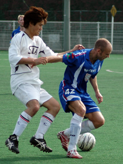
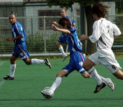
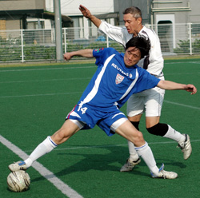
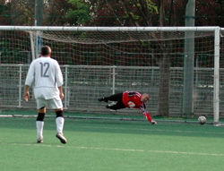

|
Hachioji Park, Saturday 5th May, Sala handed BFC their first TML title after being outplayed by the champions at Hachioji on Saturday.
BFC scored three times in the first half to virtually kill the game, and the second half was played out as something of a formality.
Sala started brightly enough and indeed could have taken the lead when Toby’s goal bound strike was blocked by a defender with the keeper floundering on the ground.
Minutes later, in another promising move, Dhugal’s brave challenge with the goalkeeper saw him limp off having realized amongst other things, that he ain’t no Brian Gallagher.
The introduction of injury-prone Charles coincided eerily with BFC coming right back into it.
On the fifteen minute mark, BFC took the lead. With the Sala defence backing off faster than a French cavalry charge, some nice interplay in the middle of the park gave Paul Wadsworth time and space to swerve a shot into the very bottom left hand corner of the goal.
At one-nil, the game was finely balanced, both sides knowing that the next goal would be crucial. Sala went close through Clarkey’s header, and Toby’s miscued shot after he had created the chance himself with a nice turn.
BFC shrugged off these half chances though and doubled their lead in clinical fashion. Alex Sahara, whose pace caused the Sala backline problems all day, streaked down the left wing before cutting inside and beating Sid from a ridiculous angle. This left Sala in something of a hole, one from which they weren’t to climb out of until long after the game was finished.
 Sid kept BFC at bay a little longer with an excellent save from a header which had him wrong footed, but it was only delaying the inevitable.
Sala were sitting too deep for much of the game and a failure to clear the ball effectively led to Jon Day’s run and shot which Sid parried into the path of the unmarked Alex who tucked his second goal in for a good night’s sleep.
Sala heads went down from this point and despite a rousing half time team talk, it was all over from the moment that third goal went in.
The second half was a write off, with BFC happy to retain possession at the back for long periods and Sala less than happy about having to chase them. The lack of attacking play from Sala in the second half either says a lot about the quality of the BFC defense or the lack of ambition of Sala to get men forward. I don’t know which is fairer but the latter was certainly apparent and primarily down to a lack of fitness.
 Military style training camps have been suggested for the summer and with Guido ‘El Diktator’ Geisler running the show it certainly wouldn’t be fun, yet it could be what Sala need. Some Sala players are now so slow that I saw referee Quentin overtake one white shirt in full flow by jogging backwards, whistle in mouth, muttering “In your own time…”
Toby’s dominance in the air was of little use to Sala in the second half with most of his flicks going unchased, whilst at the other end, only a few top drawer tackles from Ian kept BFC from breaking away.
He got a bit carried away unfortunately when Shosuke went clean through, scything him down from behind on the edge of the box.
Referee Quentin awarded a penalty and somehow Ian avoided what seemed certain to be a straight red. Sid almost kept out Carlos’ penalty, but it sneaked in for the fourth.
Speaking of Shosuke, I don’t think I can recall one player being the subject of so many match reports, so I thought I’d throw my two cents in. Firstly he is obviously one of the best players in the league, pace, touch, freakish wiry strength etc all in abundance and seems like a nice enough bloke.
Secondly, he does get kicked around a lot, and some of the criticism of this is justified. In the game on Saturday I thought there were one or two terrible fouls against him that had me cringing, but several other people were on the receiving end of bad fouls too.
What gets me is the “poor little young Shosuke” comments. Size, age and financial status are not bargaining chips to be used against referees. It’s like saying, poor little Gheorge Hagi, or poor little George Gregan. Football is a physical sport and if you play it then you have to be prepared to play against people of every size.
Shosuke can more than look after himself, and half of the fouls commited against him are because he infuriates people so much with his shirt pulling and diving. He deserves protection from the referee, but he isn’t whiter than white himself and at the end of the day, diving is cheating. As the local policeman was often fond of telling me in my child hood days, “If you fly with the crows, you get shot down with the crows.” Enough said.
Sala did pull one goal back at the death, Michael running onto a through-ball from someone or other and finishing well.
In the end though, BFC could probably have stepped up another gear had they needed to and Sala were well beaten in what must rank as their worst performance of the season. The only ray of sunshine is that there is a cup final to look forward to. Hoorah.
Finally, a big congrats to BFC who have been by far the best team in the league this season and are worthy winners. It’s good to see the axis of evil finally broken.
Maybe next season….
Report by Roddy Charles.
|